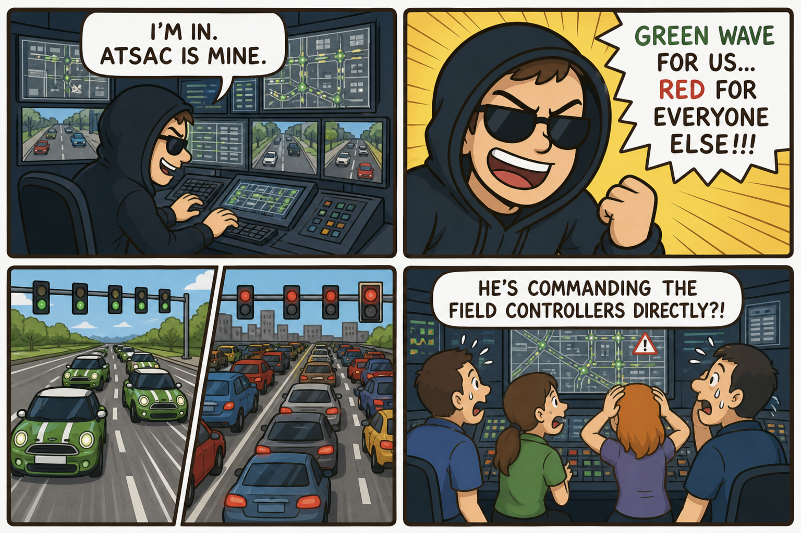
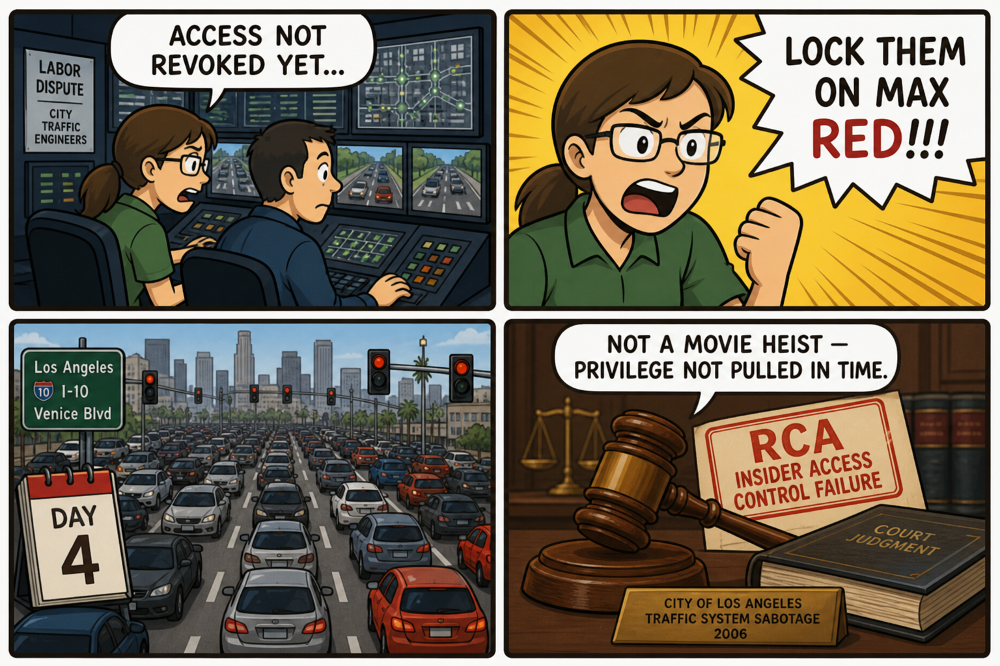

Module 07 / Traffic Management The Italian Job (2003)
Master-station compromise, spoofed detector feeds, and overridden signal-timing plans.
The Script — Cinematic Anchor
Dialogue Extract
Scene Visual — Comic Strip

Dramatis Personae → OT Mapping
- Lyle (hacker)→Insider-Enabled Threat Actor — technically capable, exploiting access rather than a pure network penetration
- Charlie Croker (crew leader)→Operation Lead directing the exploit's objective
- ATSAC control center staff (background)→Traffic Management Center (TMC) Operators
Diegetic Failure Mode
A single actor gains access to the city's master traffic-signal system and manipulates phase timing across many intersections simultaneously and in real time, for a use entirely outside its intended operational purpose — with no meaningful barrier between planning-level system access and live field-controller command authority.
Theoretical ICS Architecture
Purdue Model Impact
Protocols & Control Logic
NTCIP (National Transportation Communications for ITS Protocol) governs communication between a TMC and field controllers over serial or IP links. Legacy municipal traffic systems have historically used unauthenticated command sets with no cryptographic signing between the TMC and field cabinets — meaning any party with system access, authorized or not, can issue commands the field controller will execute without question.
The Plant — Empirical Grounding
Plant Visual — Comic Strip

Real-World Incident Precedent
In August 2006, two Los Angeles city traffic engineers, Kartik Patel and Gabriel Murillo, used their legitimate system access — before it was revoked, exploiting a delay in the termination process during a labor dispute — to reprogram signal controllers at four major intersections, locking specific approaches on maximum red-light delay. The resulting gridlock persisted for four days before the sabotage was traced and corrected, and both engineers were later prosecuted.
Cinematic vs. Reality Matrix
| Dimension | Media Depiction (The Script) | Industrial Reality (The Plant) |
|---|---|---|
| Failure Vector | A remote hacker with no privileged insider status penetrates ATSAC's live system in real time to manipulate signals citywide. | LA 2006: two city traffic engineers used their own legitimate, not-yet-revoked system access to directly reprogram specific intersection controllers. |
| Time to Impact | Traffic pattern changes appear instantaneously and precisely choreographed across many intersections during a live chase. | The LA sabotage caused persistent red-light delays lasting four days before detection and correction — a static configuration change, not a real-time dynamic manipulation. |
| Operator Visibility | TMC staff are shown as generally unaware their system is being externally puppeted. | LA operators noticed unusual congestion complaints from the public but took time to trace it to deliberate reprogramming, since the changes were made through what looked like legitimate configuration access. |
| Failsafe Behavior | No meaningful protective response is depicted; the system does exactly what the hacker commands. | Once identified, the city restored standard timing plans from a backed-up configuration baseline relatively quickly — illustrating the value of configuration versioning and rollback capability. |
Root-Cause Analysis (RCA)
Classification: Network/Cyber (Insider Access Control Failure)Both cases fundamentally rely on privileged access rather than a pure network-based command injection. The specific gap was inadequate access-revocation timing and no authorization boundary separating planning-level access from live field-controller write access.
Engineering Runbook & Countermeasures
Telemetry Envelope
| Parameter | Normal / Baseline | Anomaly Threshold | Condition at Incident |
|---|---|---|---|
| Signal cycle length | 60–120 seconds per intersection, per timing plan | N/A — no automatic anomaly detection existed | Specific approaches locked to maximum red-hold indefinitely, producing sustained gridlock |
| All-red hold duration | A few seconds, for safety clearance only | Any sustained hold far beyond the timing plan's design should be flagged | Held far outside any legitimate timing plan for four days, undetected by the system itself |
Mitigation / Recovery Protocol
- Immediate access revocation tied to HR events: no lag between a termination or role-change action and system access removal — the specific documented gap in the 2006 case.
- Role-based access control: separate "view/monitor" privileges from "write timing plan" privileges, with all field-controller configuration changes logged and attributed.
- Configuration baseline versioning and automatic rollback: enable rapid restoration of signal timing plans once tampering is detected.
- Anomaly detection on sustained non-standard signal states: flag any approach held at maximum red far longer than any legitimate timing plan permits.
- Authenticate and sign NTCIP command traffic: cryptographically sign communications between the TMC and field cabinets where legacy hardware allows.